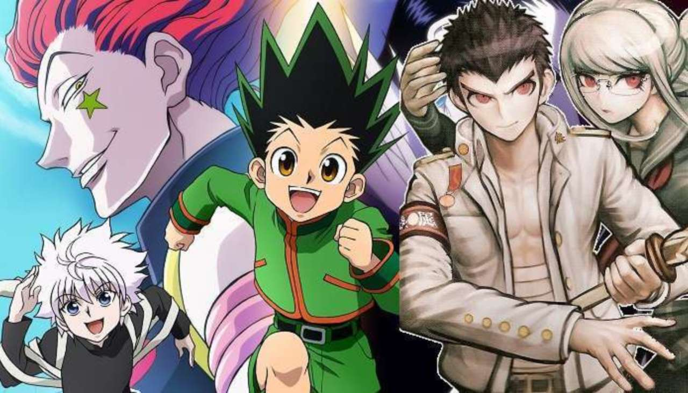
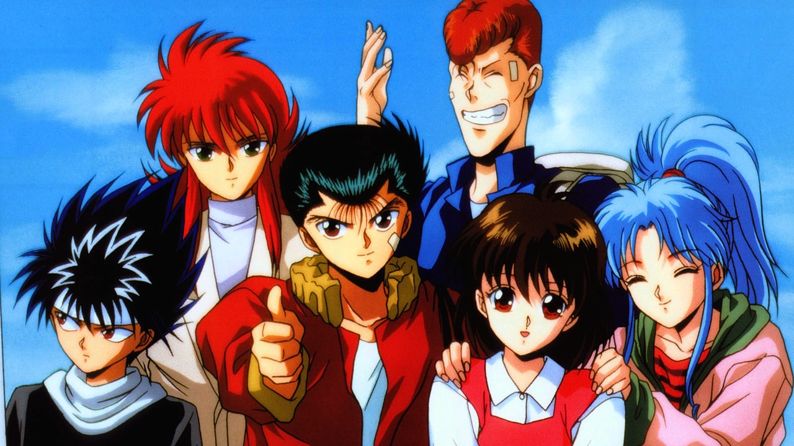
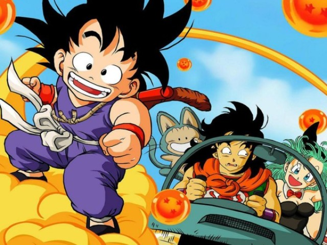

O blog que te indica os melhores conteudos de animes series e filmes.
Hunter x Hunter
Em HxH, acompanhamos a historia de Gon Freecs. Gon deseja virar um Hunter para, basicamente, encontrar seu pai.
No meio do caminho, vai passando por altas aventuras da pesada com um pessoal levado da breca.
E caso não saibam, Hunter (ou caçador) é a posição de maior destaque desse universo,
algo como o trabalho mais perigoso e recompensador existente.
Poucos podem ser caçadores e menos ainda conseguem ser realmente bons e relevantes, como o próprio pai de Gon, o senhor Ging.

Como já adiantei mais pra cima, Hunter possui uma mistura muito fina entre os dois elementos.
O humor inocente e leve, como já estamos acostumados a ver em MUITOS trabalhos japoneses,
sempre estão presentes, desde situações completamente isoladas até como complemento (e suavização?)
de situações extremamente dramáticas e que exploram moralidade e ética, situações bastante comuns durante o programa.
O importante é que os dois elementos (especialmente a comédia) não são desnecessários, o que por si só já é bem interessante de ver.
Confira um video demonstrativo sobre:
Yuyu Hakusho
O anime vai contando a história de Yusuke Urameshi, protagonista masculino típico de anime
(vagabundo nos estudos, brigão, família problemática) que morre, inesperadamente, salvando
uma criança. Esse ato nobre, acaba por criar uma espécie de conflito acerca do destino de sua alma.
Então, porque não dar uma segunda chance ao garoto? E depois de passar por algumas situações, Yusuke
acaba retornando ao mundo dos vivos com a condição de se tornar detetive espiritual, ou seja, investigando
e caçando youkais (demônios) infltrados no mundo dos humanos. Além de Yusuke, os personagens mais recorrentes
são: Kuwabara, Hiei e Kurama, com personalidades únicas e marcantes, tornando o anime muito melhor, não consigo
imaginar Yu Yu Hakusho sem eles, para mim, são tão protagonistas quanto Yusuke. Particularmente, gosto mais deles
do que do próprio Yusuke, me condenem se quiser

O início do anime é um pouco lento, e acho que os 10 primeiros episódios
poderiam ser muito bem resumidos em no máximo 3 ou 4. Mas, se você conseguir
sobreviver a esse início, vai acabar enfeitiçado e parar de assistir se tornará um desafio.
Falo sério, quando finalmente consegui pegar todos os episódios, tive que assistir seguidamente,
só parando para as necessidades básicas. Talvez as meninas não se empolguem tanto em ver o anime quanto os meninos.
Afinal, ele é um pouquinho violento.
O anime todo é dividido em 4 sagas (detetive espiritual, torneio das trevas, protão do inferno e saga dos três reis)
com total de 112 episódios, além de 1 ova e 1 filme com histórias à parte. Menção mais do que honrosa para a excelente
dublagem brasileira do anime. As adaptações de expressões e gíras ficaram excelentes.
Confira um video demonstrativo sobre:
Dragon Ball
A história de Dragon Ball começa com Son Goku, um garoto ingênuo e puro com cauda de macaco e uma força extraordinária.
Ele mora sozinho após a morte de seu avô adotivo em uma montanha chamada Paozu.
Um dia ele conhece Bulma, uma garota muito inteligente da cidade, que estava em busca das sete Esferas do Dragão.
Persuadido, Goku concorda em ajudar Bulma a encontrar as Esferas. Os dois partem em uma longa jornada, durante a qual
eles fazem muitos amigos. Depois, Goku passa por um treinamento com Kame-Sennin, onde o garoto Kuririn se torna seu
parceiro, e participa de vários torneios mundiais de artes marciais. No curso de seu crescimento e seu desenvolvimento,
ele enfrenta inúmeros inimigos, incluindo Piccolo, que depois se torna seu aliado. Quando jovem adulto,
Goku se casa com Chi-Chi, cumprindo uma promessa feita por ele quando ambos eram crianças, e possui seu primeiro
filho chamado Gohan.Goku acaba descobrindo que pertence à raça extraterrestre Saiyajin, e que foi enviado
à Terra quando criança para conquistar o planeta.
Pouco depois de sua chegada, no entanto, ele tinha sofrido um
ferimento na cabeça, perdendo desta forma a memória da missão e sua natureza agressiva. No entanto, o jovem decide
ontinuar a defender seu planeta adotado do ataque de inimigos cada vez mais difíceis, incluindo o príncipe dos sayajins
Vegeta, que depois também se torna seu aliado. Desta forma, juntamente com sua família e seus amigos, Goku luta contra
migos como Freeza, Cell, Boo, entre outros, se tornando o protetor da Terra e todo o universo.

Dragon Ball carrega tanta nostalgia para mim.
É tudo sobre Goku crescer, e a raça dos sayajins.
É mais sobre suas aventuras e ele viajando por todo o mundo e lutando com diversos inimigos.
Você aprende tudo sobre os vários personagens e o mundo interessante que ocorre tudo e se apega a eles.
Também você pode ver todas as origens dos personagens originais, como Kuririn, Yamcha, Tien, Bulma, mestre Roshi, Piccolo e o resto dos lutadores Z.
Alem dos diversos vilões que tornam as lutas e o enredo o mais engraçado e ao mesmo tempo com toda a ação possivel.